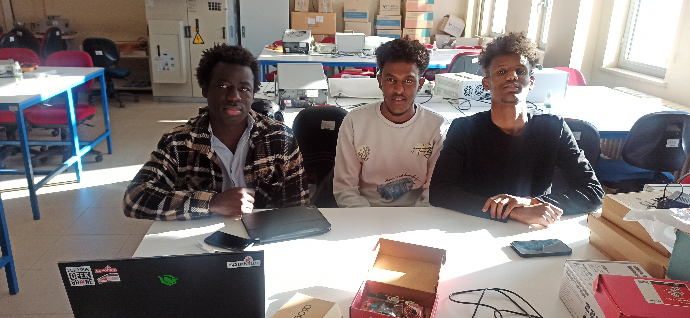

İlk hafta ilk dersimize üç arkadaşımız (Patrick, Abdullah, Abdikani) geldi. Beraber Arduino ve sensörlere baktık.
Sayımız çok az olduğundan ilk hafta ikinci dersimizi yapmadık. Ben laboratuvara elimdeki ve 6. kat laboratuvardaki bütün Arduino ve ilgili malzemeleri getiriyorum. Sizler de kendinize eğer maddi imkânınız varsa birer Arduino (USB kablo ile) alırsanız çok iyi olur. Ayrıca derse laptopunuz varsa bilgisayarınızı mutlaka getirin. Gruplar hâlinde masalarda çalışacağız. Her gruba en az bir laptop düşerse çok iyi olur. Arduino'ları programlamak için laptop gerekiyor.